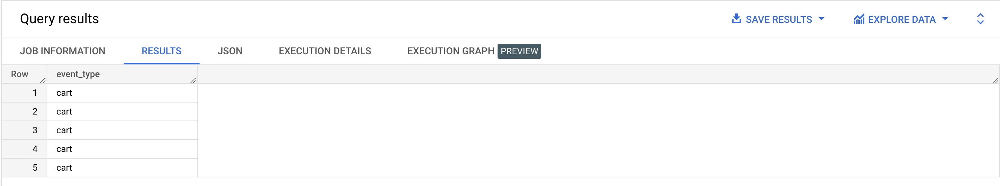
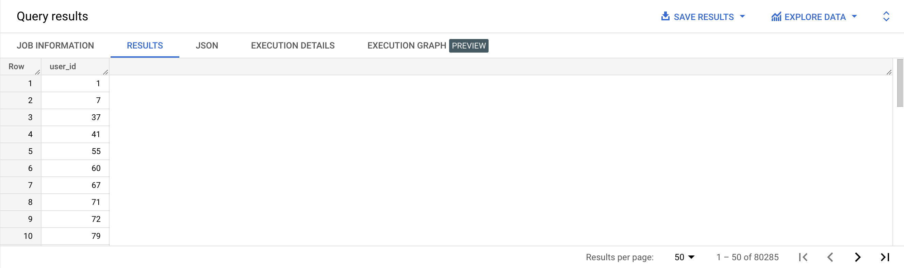
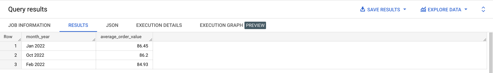
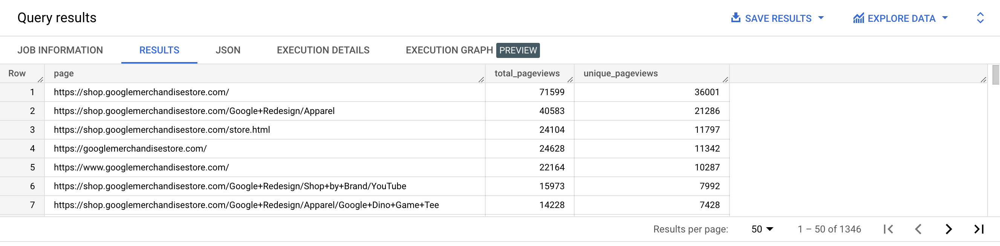
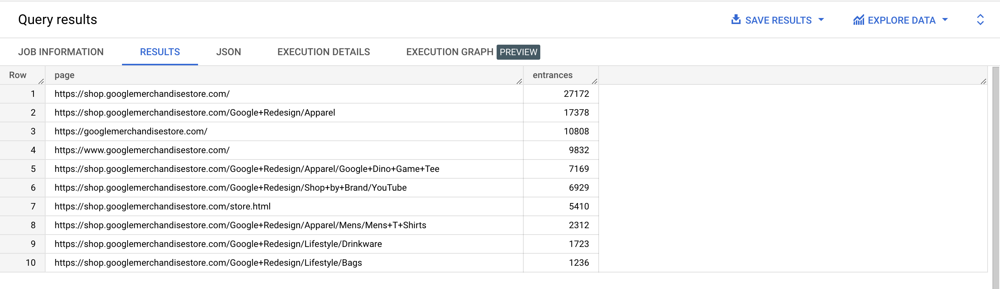
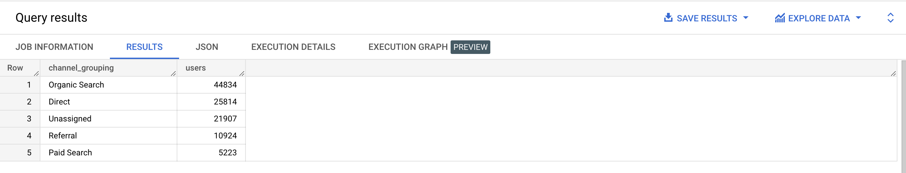
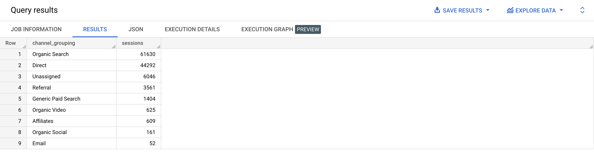

In addition to querying a table directly, subqueries allow you to query the results of the other queries. It’s also a way to make complex queries more manageable.
SELECT *
FROM ( SELECT event_type
FROM bigquery-public-data.thelook_ecommerce.events
LIMIT 5
);

Table resulting from subqueries can also be aliased and we can access their column names using the dot notation.
SELECT subquery.event_type
FROM ( SELECT event_type
FROM bigquery-public-data.thelook_ecommerce.events
LIMIT 5
) AS subquery;
As our queries grow more complex with many levels of nested subqueries, the code can become harder to read. A great way to make subqueries more usable is to use the WITH…AS clause, also known as common table expressions.
WITH subquery AS (
SELECT event_type
FROM bigquery-public-data.thelook_ecommerce.events
LIMIT 5
)
SELECT event_type
FROM subquery;
We can use several common table expressions, separated by a comma:
WITH subquery_1 AS (
SELECT event_type
FROM bigquery-public-data.thelook_ecommerce.events
LIMIT 5
),
subquery_2 AS (
SELECT COUNT(*) AS event_type_count
FROM subquery_1 )
SELECT *
FROM subquery_2;
Scalar subqueries are subquery that return a table that has just one row and one column, basically a cell.
SELECT number_of_users
FROM
( SELECT COUNT(*) AS number_of_users
FROM bigquery-public-data.thelook_ecommerce.users
) AS user_count;
| number_of_users | 100000 |
|---|
SELECT user_id
FROM
( SELECT DISTINCT user_id
FROM bigquery-public-data.thelook_ecommerce.orders
) AS customer_ids;

We can use this kind of subqueries in our WHERE clause with the IN and NOT…IN constructs:
SELECT id AS non_customer_id
FROM bigquery-public-data.thelook_ecommerce.users
WHERE id NOT IN
( SELECT DISTINCT user_id
FROM bigquery-public-data.thelook_ecommerce.orders
);
In the case we want to test our condition on several columns, we would use parentheses: WHERE (id, first_name, last_name,…) not in …
A correlated subquery is a subquery that refers to a field in the outer query and gets executed for each record in the outer query. EXISTS is an operator that’s always followed by a subquery. It returns true if the table used as argument has at least 1 row, false otherwise. If we rewrite our previous example with a correlated query, we get:
SELECT id AS non_customer_id
FROM bigquery-public-data.thelook_ecommerce.users users
WHERE NOT EXISTS
( SELECT user_id
FROM bigquery-public-data.thelook_ecommerce.orders orders
WHERE users.id = orders.user_id
);
We can see that while the previous subquery was self-sufficient:
SELECT DISTINCT user_id
FROM bigquery-public-data.thelook_ecommerce.orders;
The correlated subquery needs data from the outer query to execute (i.e the id column in the users table):
SELECT user_id
FROM bigquery-public-data.thelook_ecommerce.orders orders
WHERE users.id = orders.user_id;
There are some SQL problems where correlated queries are needed to solve them. This is especially true for problems where you are looking for negatives. When looking for positives, a JOIN will usually be a better solution. We will see JOINs in later lessons.
The main drawback of using correlated queries is that they are really slow, as they re-evaluated for each record in the outer query.
{% include practice_problems_intructions.html %}bigquery-public-data.thelook_ecommerce.orders
Write a query that will display the number of repeat customers.
| repeat_customers |
|---|
| 30200 |
WITH multiple_order_users AS
( SELECT user_id,
COUNT(*) AS number_of_orders
FROM bigquery-public-data.thelook_ecommerce.orders
GROUP BY user_id
HAVING number_of_orders > 1
)
SELECT COUNT(*) AS repeat_customers
FROM multiple_order_users;
bigquery-public-data.thelook_ecommerce.order_items
Write a query that will show the id of the top selling product in 2022.
| product_id |
|---|
| 25557 |
WITH top_product_sales AS
( SELECT product_id,
COUNT(*) AS sales
FROM bigquery-public-data.thelook_ecommerce.order_items
WHERE EXTRACT(YEAR FROM CAST(created_at AS DATE)) = 2022
GROUP BY product_id
ORDER BY sales DESC
LIMIT 1
)
SELECT product_id
FROM top_product_sales;
bigquery-public-data.thelook_ecommerce.order_items
bigquery-public-data.thelook_ecommerce.products
| name |
|---|
| G311 Golds Gym Racerback Tank Top |
WITH top_product_sales AS
( SELECT product_id,
COUNT(*) AS sales
FROM bigquery-public-data.thelook_ecommerce.order_items
WHERE EXTRACT(YEAR FROM CAST(created_at AS DATE)) = 2022
GROUP BY product_id
ORDER BY sales DESC,
product_id ASC
LIMIT 1
)
SELECT name
FROM ( SELECT name
FROM bigquery-public-data.thelook_ecommerce.products products
WHERE products.id = ( SELECT product_id FROM top_product_sales )
);
bigquery-public-data.thelook_ecommerce.products
Write a query that will show the average retail price, calculated without the highest and lowest priced products.
| smoothed_out_average_retail_price |
|---|
| 59.15 |
WITH max_price AS
( SELECT MAX(retail_price) AS price
FROM bigquery-public-data.thelook_ecommerce.products
),
min_price AS
( SELECT MIN(retail_price) AS price
FROM bigquery-public-data.thelook_ecommerce.products
)
SELECT ROUND(AVG(retail_price), 2) AS smoothed_out_average_retail_price
FROM bigquery-public-data.thelook_ecommerce.products
WHERE retail_price NOT IN ((SELECT price FROM max_price), (SELECT price FROM min_price));
bigquery-public-data.thelook_ecommerce.order_items
Write a query that will:

WITH order_value_by_month AS
( SELECT FORMAT_DATE('%b %Y', created_at) AS month_year,
order_id,
SUM(sale_price) AS order_value
FROM bigquery-public-data.thelook_ecommerce.order_items
WHERE CAST(created_at AS date) < DATE_TRUNC(CURRENT_DATE(), month)
AND CAST(created_at AS date) >= DATE_TRUNC(CURRENT_DATE(), month) - MAKE_INTERVAL(month => 12)
GROUP BY month_year,
order_id
)
SELECT month_year,
ROUND(AVG(order_value), 2) AS average_order_value
FROM order_value_by_month
GROUP BY month_year
ORDER BY average_order_value DESC
LIMIT 3;
bigquery-public-data.thelook_ecommerce.products
bigquery-public-data.thelook_ecommerce.order_items
| percentage_of_nevered_ordered_products |
|---|
| 0.21 |
WITH all_products AS
( SELECT DISTINCT id AS product_id
FROM bigquery-public-data.thelook_ecommerce.products
),
ordered_products AS
( SELECT DISTINCT product_id
FROM bigquery-public-data.thelook_ecommerce.order_items
),
never_ordered_products AS
( SELECT all_products.product_id
FROM all_products
WHERE all_products.product_id NOT IN ( SELECT ordered_products.product_id FROM ordered_products )
)
SELECT ROUND(( SELECT COUNT(*) FROM never_ordered_products) / (SELECT COUNT(*) FROM all_products) * 100, 2)
AS percentage_of_nevered_ordered_products;
bigquery-public-data.thelook_ecommerce.order_items
bigquery-public-data.thelook_ecommerce.users
Write a query that will display the top buyer in February 2022.
| id | first_name | last_name |
|---|---|---|
| 79080 | William | Conrad |
WITH top_buyer_id AS
( SELECT user_id,
ROUND(SUM(sale_price), 2) AS customer_spend
FROM bigquery-public-data.thelook_ecommerce.order_items
WHERE CAST(created_at AS DATE) BETWEEN DATE('2022-02-01') AND DATE('2022-02-28')
GROUP BY user_id
ORDER BY customer_spend DESC
LIMIT 1
),
users AS
( SELECT id, first_name, last_name
FROM bigquery-public-data.thelook_ecommerce.users
)
SELECT id, first_name, last_name
FROM users
WHERE id = ( SELECT user_id FROM top_buyer_id );
bigquery-public-data.ga4_obfuscated_sample_ecommerce.events_*

WITH subquery AS
( SELECT user_pseudo_id,
( SELECT value.int_value
FROM UNNEST(event_params)
WHERE event_name = 'page_view'
AND key = 'ga_session_id'
) AS session_id,
( SELECT value.string_value
FROM UNNEST(event_params)
WHERE event_name = 'page_view'
AND key = 'page_location'
) AS page
FROM `bigquery-public-data.ga4_obfuscated_sample_ecommerce.events_*`
WHERE _table_suffix BETWEEN '20210101' AND '20210131'
AND event_name = 'page_view'
)
SELECT page,
COUNT(*) AS total_pageviews,
COUNT(DISTINCT CONCAT(user_pseudo_id,session_id)) AS unique_pageviews
FROM subquery
GROUP BY page
ORDER BY unique_pageviews DESC;
bigquery-public-data.ga4_obfuscated_sample_ecommerce.events_*

SELECT DISTINCT ( SELECT value.string_value
FROM UNNEST(event_params)
WHERE key = 'page_location'
AND event_name = 'page_view'
) AS page,
SUM(COALESCE(
( SELECT value.int_value
FROM UNNEST(event_params)
WHERE key = 'entrances'
AND event_name = 'page_view'
), 0)
) AS entrances
FROM `bigquery-public-data.ga4_obfuscated_sample_ecommerce.events_*`
WHERE _table_suffix BETWEEN '20210101' AND '20210131'
AND event_name = 'page_view'
GROUP BY page
HAVING entrances > 0
ORDER BY entrances DESC
LIMIT 10;
bigquery-public-data.ga4_obfuscated_sample_ecommerce.events_*
| new_users | returning_users |
|---|---|
| 90221 | 16598 |
WITH user_metrics AS
( SELECT user_pseudo_id,
CONCAT(user_pseudo_id, '.', (SELECT value.int_value FROM UNNEST(event_params) WHERE key = 'ga_session_id'))
AS unique_session_id,
(SELECT value.int_value FROM UNNEST(event_params) WHERE key = 'ga_session_number')
AS session_number
FROM `bigquery-public-data.ga4_obfuscated_sample_ecommerce.events_*`
WHERE _table_suffix BETWEEN '20210101' AND '20210131'
GROUP BY user_pseudo_id,
unique_session_id,
session_number
ORDER BY user_pseudo_id ASC,
session_number ASC
)
SELECT
( SELECT COUNT(DISTINCT user_pseudo_id)
FROM user_metrics
WHERE session_number = 1
) AS new_users,
( SELECT COUNT(DISTINCT user_pseudo_id)
FROM user_metrics
WHERE session_number > 1
) AS returning_users;
bigquery-public-data.ga4_obfuscated_sample_ecommerce.events_*
| all_sessions | sessions_with_purchases | session_conversion_rate |
|---|---|---|
| 118380 | 1115 | 0.94 |
WITH sessions_with_purchases AS
( SELECT CONCAT( user_pseudo_id,
'.',
(SELECT value.int_value FROM UNNEST(event_params) WHERE key = 'ga_session_id')
) AS unique_session_id,
COUNT(*) AS purchases
FROM `bigquery-public-data.ga4_obfuscated_sample_ecommerce.events_*`
WHERE (_table_suffix BETWEEN '20210101' AND '20210131')
AND event_name = 'purchase'
GROUP BY unique_session_id
),
all_sessions AS
( SELECT DISTINCT CONCAT( user_pseudo_id,
'.',
(SELECT value.int_value FROM UNNEST(event_params) WHERE key = 'ga_session_id'))
FROM `bigquery-public-data.ga4_obfuscated_sample_ecommerce.events_*`
WHERE _table_suffix BETWEEN '20210101' AND '20210131'
)
SELECT (SELECT COUNT(*) FROM all_sessions) AS all_sessions,
(SELECT COUNT(*) FROM sessions_with_purchases) AS sessions_with_purchases,
ROUND(
(SELECT COUNT(*) FROM sessions_with_purchases)
/ (SELECT COUNT(*) FROM all_sessions) * 100,
2) AS session_conversion_rate;
bigquery-public-data.ga4_obfuscated_sample_ecommerce.events_*
You can find documentation on the channel grouping concept here: https://support.google.com/analytics/answer/9756891

SELECT CASE
WHEN traffic_source.source = '(direct)'
AND (traffic_source.medium IN ('(not set)', '(none)'))
THEN 'Direct'
WHEN ( REGEXP_CONTAINS(traffic_source.source,'alibaba|amazon|google shopping|shopify|etsy|ebay|stripe|walmart')
OR REGEXP_CONTAINS(traffic_source.name, '^(.*(([^a-df-z]|^)shop|shopping).*)$'))
AND REGEXP_CONTAINS(traffic_source.medium, '^(.*cp.*|ppc|paid.*)$')
THEN 'Paid Shopping'
WHEN REGEXP_CONTAINS(traffic_source.source,'baidu|bing|duckduckgo|ecosia|google|yahoo|yandex')
AND REGEXP_CONTAINS(traffic_source.medium,'^(.*cp.*|ppc|paid.*)$')
THEN 'Paid Search'
WHEN REGEXP_CONTAINS(traffic_source.source,'badoo|facebook|fb|instagram|linkedin|pinterest|tiktok|twitter|whatsapp')
AND REGEXP_CONTAINS(traffic_source.medium,'^(.*cp.*|ppc|paid.*)$')
THEN 'Paid Social'
WHEN REGEXP_CONTAINS(traffic_source.source,'dailymotion|disneyplus|netflix|youtube|vimeo|twitch|vimeo|youtube')
AND REGEXP_CONTAINS(traffic_source.medium,'^(.*cp.*|ppc|paid.*)$')
THEN 'Paid Video'
WHEN traffic_source.medium IN ('display', 'banner', 'expandable', 'interstitial', 'cpm')
THEN 'Display'
WHEN REGEXP_CONTAINS(traffic_source.source,'alibaba|amazon|google shopping|shopify|etsy|ebay|stripe|walmart')
OR REGEXP_CONTAINS(traffic_source.name, '^(.*(([^a-df-z]|^)shop|shopping).*)$')
THEN 'Organic Shopping'
WHEN REGEXP_CONTAINS(traffic_source.source,'badoo|facebook|fb|instagram|linkedin|pinterest|tiktok|twitter|whatsapp')
OR traffic_source.medium IN ('social', 'social-network', 'social-media', 'sm', 'social network', 'social media')
THEN 'Organic Social'
WHEN REGEXP_CONTAINS(traffic_source.source,'dailymotion|disneyplus|netflix|youtube|vimeo|twitch|vimeo|youtube')
OR REGEXP_CONTAINS(traffic_source.medium,'^(.*video.*)$')
THEN 'Organic Video'
WHEN REGEXP_CONTAINS(traffic_source.source,'baidu|bing|duckduckgo|ecosia|google|yahoo|yandex')
OR traffic_source.medium = 'organic'
THEN 'Organic Search'
WHEN REGEXP_CONTAINS(traffic_source.source,'email|e-mail|e_mail|e mail')
OR REGEXP_CONTAINS(traffic_source.medium,'email|e-mail|e_mail|e mail')
THEN 'Email'
WHEN traffic_source.medium = 'affiliate'
THEN 'Affiliates'
WHEN traffic_source.medium = 'referral'
THEN 'Referral'
WHEN traffic_source.medium = 'audio'
THEN 'Audio'
WHEN traffic_source.medium = 'sms'
THEN 'SMS'
WHEN traffic_source.medium LIKE '%push'
OR REGEXP_CONTAINS(traffic_source.medium,'mobile|notification')
THEN 'Mobile Push Notifications'
ELSE 'Unassigned'
END AS channel_grouping,
COUNT(DISTINCT user_pseudo_id) AS users
FROM `bigquery-public-data.ga4_obfuscated_sample_ecommerce.events_*`
WHERE _table_suffix BETWEEN '20210101' AND '20210131'
GROUP BY channel_grouping
ORDER BY users DESC;
bigquery-public-data.ga4_obfuscated_sample_ecommerce.events_*
You can learn more about channel grouping with this link: https://support.google.com/analytics/answer/9756891

WITH subquery AS
( SELECT user_pseudo_id,
( SELECT value.int_value FROM UNNEST(event_params) WHERE key = 'ga_session_id' ) AS session_id,
COALESCE(MAX(( SELECT value.string_value FROM UNNEST(event_params) WHERE key = 'medium' )), '(none)') AS medium,
COALESCE(MAX(( SELECT value.string_value FROM UNNEST(event_params) WHERE key = 'source' )), '(direct)') AS source,
COALESCE(MAX(( SELECT value.string_value FROM UNNEST(event_params) WHERE key = 'campaign' )), '(not set)') AS name
FROM `bigquery-public-data.ga4_obfuscated_sample_ecommerce.events_*`
WHERE _table_suffix BETWEEN '20210101' AND '20210131'
GROUP BY user_pseudo_id,
session_id
)
SELECT CASE
WHEN source = '(direct)' AND (medium IN ('(not set)', '(none)')) THEN 'Direct'
WHEN (REGEXP_CONTAINS(SOURCE,'alibaba|amazon|google shopping|shopify|etsy|ebay|stripe|walmart')
OR REGEXP_CONTAINS(name, '^(.*(([^a-df-z]|^)shop|shopping).*)$'))
AND REGEXP_CONTAINS(medium, '^(.*cp.*|ppc|paid.*)$')
THEN 'Paid Shopping'
WHEN REGEXP_CONTAINS(SOURCE,'baidu|bing|duckduckgo|ecosia|google|yahoo|yandex')
AND REGEXP_CONTAINS(medium,'^(.*cp.*|ppc|paid.*)$')
AND LOWER(name) LIKE '%simmer%'
THEN 'Branded Paid Search'
WHEN REGEXP_CONTAINS(SOURCE,'baidu|bing|duckduckgo|ecosia|google|yahoo|yandex')
AND REGEXP_CONTAINS(medium,'^(.*cp.*|ppc|paid.*)$')
AND LOWER(name) NOT LIKE '%simmer%'
THEN 'Generic Paid Search'
WHEN REGEXP_CONTAINS(SOURCE,'baidu|bing|duckduckgo|ecosia|google|yahoo|yandex')
AND REGEXP_CONTAINS(medium,'^(.*cp.*|ppc|paid.*)$')
THEN 'Paid Search'
WHEN REGEXP_CONTAINS(SOURCE,'badoo|facebook|fb|instagram|linkedin|pinterest|tiktok|twitter|whatsapp')
AND REGEXP_CONTAINS(medium,'^(.*cp.*|ppc|paid.*)$')
THEN 'Paid Social'
WHEN REGEXP_CONTAINS(SOURCE,'dailymotion|disneyplus|netflix|youtube|vimeo|twitch|vimeo|youtube')
AND REGEXP_CONTAINS(medium,'^(.*cp.*|ppc|paid.*)$')
THEN 'Paid Video'
WHEN medium IN ('display', 'banner', 'expandable', 'interstitial', 'cpm')
THEN 'Display'
WHEN REGEXP_CONTAINS(SOURCE,'alibaba|amazon|google shopping|shopify|etsy|ebay|stripe|walmart')
OR REGEXP_CONTAINS(name, '^(.*(([^a-df-z]|^)shop|shopping).*)$')
THEN 'Organic Shopping'
WHEN REGEXP_CONTAINS(SOURCE,'badoo|facebook|fb|instagram|linkedin|pinterest|tiktok|twitter|whatsapp')
OR medium IN ('social', 'social-network', 'social-media', 'sm', 'social network', 'social media')
THEN 'Organic Social'
WHEN REGEXP_CONTAINS(SOURCE,'dailymotion|disneyplus|netflix|youtube|vimeo|twitch|vimeo|youtube')
OR REGEXP_CONTAINS(medium,'^(.*video.*)$')
THEN 'Organic Video'
WHEN REGEXP_CONTAINS(SOURCE,'baidu|bing|duckduckgo|ecosia|google|yahoo|yandex')
OR medium = 'organic'
THEN 'Organic Search'
WHEN REGEXP_CONTAINS(SOURCE,'email|e-mail|e_mail|e mail')
OR REGEXP_CONTAINS(medium,'email|e-mail|e_mail|e mail')
THEN 'Email'
WHEN medium = 'affiliate'
THEN 'Affiliates'
WHEN medium = 'referral'
THEN 'Referral'
WHEN medium = 'audio'
THEN 'Audio'
WHEN medium = 'sms'
THEN 'SMS'
WHEN medium LIKE '%push'
OR REGEXP_CONTAINS(medium,'mobile|notification')
THEN 'Mobile Push Notifications'
ELSE 'Unassigned'
END AS channel_grouping,
COUNT(DISTINCT CONCAT(user_pseudo_id, '.', session_id)) AS sessions
FROM subquery
GROUP BY channel_grouping
ORDER BY sessions DESC;